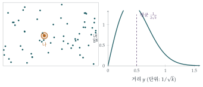

STEP II 2012, 문제 13
계속 읽기 전에 문제를 먼저 읽어 보자. 문제는 STEP Support Programme의 문제 데이터베이스에 있다: step.maths.org/questions/12-s2-q13
도입
슈퍼마켓, 나무, 별, 휴대전화 기지국이 어떤 영역에 “무작위로” 흩어져 있다면, 가장 가까운 것까지는 얼마나 가야 할까? 답은 오직 밀도(density) \(k\)(단위 넓이당 평균 개수)에만 의존하며, 레일리 분포(Rayleigh distribution)라는 특징적인 모양을 갖는다. 가장 가까운 것까지의 거리는 평균 \(\frac{1}{2\sqrt k}\)이다. 제곱킬로미터당 슈퍼마켓이 하나라면 \(500\)미터이다.
이 모형은 공간 푸아송 과정(spatial Poisson process)으로, 시간에 따른 무작위 도착(12.18 절)의 2차원판이다. 계산은 짧고 아름답지만, 진짜 흥미로운 점은 이것이 기준점 역할을 한다는 데 있다. 생태학자들은 실제 최근접 이웃 거리(nearest-neighbour distance)를 이 공식과 비교하여 나무나 둥지가 뭉쳐 있는지, 무작위로 흩어져 있는지, 아니면 일부러 간격을 두고 있는지 판단한다.
시작하기 전에
평균이 \(\mu\)인 푸아송 확률변수(Poisson random variable)가 값 \(0\)을 가질 확률은 얼마인가?
\(\mathrm{P}(0) = e^{-\mu}\)이다. 반지름이 \(y\)인 원의 넓이는 \(\pi y^2\)이므로, 그 안에 있는 슈퍼마켓 수의 평균은 \(k\pi y^2\)이다.
차근차근 풀기
단계 1 가까이에 슈퍼마켓이 없을 확률
거리 \(y\) 이내에 슈퍼마켓이 하나도 없을 확률은 \(e^{-\pi ky^2}\)이다.
단계 2 가장 가까운 거리의 분포
\(Y \geq y\)는 거리 \(y\) 이내에 슈퍼마켓이 없다는 뜻이다. 그렇다면 \(\mathrm{P}(Y < y)\)는 무엇인가?
\(\mathrm{P}(Y < y) = 1 - e^{-\pi ky^2}\)이고, 이를 미분하면 확률밀도함수 \[\mathrm{f}(y) = 2\pi kye^{-\pi ky^2}, \qquad y \geq 0. \qed\] 를 얻는다.
단계 3 평균
\(y\,\mathrm{f}(y)\)를 부분적분(integration by parts)하거나, \(\mathrm{E}(Y) = \int_0^\infty\mathrm{P}(Y > y)\,\mathrm{d}y\)를 이용한다. 그런 다음 치환하여 주어진 가우스 적분(Gaussian integral)을 쓴다.
\[\mathrm{E}(Y) = \int_0^\infty e^{-\pi ky^2}\,\mathrm{d}y.\] \(x = y\sqrt{2\pi k}\)로 치환하면 \(\pi ky^2 = \frac12x^2\)이 되므로 \(\mathrm{E}(Y) = \frac{1}{\sqrt{2\pi k}}\sqrt{\frac\pi2} = \frac{1}{2\sqrt k}\)이다.■
단계 4 분산
\[\mathrm{E}(Y^2) = \int_0^\infty y^2\cdot2\pi kye^{-\pi ky^2}\,\mathrm{d}y.\] \(u = \pi ky^2\)로 치환하면(\(\mathrm{d}u = 2\pi ky\,\mathrm{d}y\)) 이 값은 \(\int_0^\infty\frac{u}{\pi k}e^{-u}\,\mathrm{d}u = \frac{1}{\pi k}\)이다. 따라서 분산(variance)은 \[\mathrm{Var}(Y) = \frac{1}{\pi k} - \frac{1}{4k} = \frac{4 - \pi}{4\pi k}. \qed\]

돌아보기
거리에 관한 질문을 개수에 관한 질문으로 바꾼다. “가장 가까운 것이 \(y\)보다 멀다”는 “\(y\) 이내에 하나도 없다”와 같다.
누적분포함수를 먼저, 밀도는 나중에. \(\mathrm{P}(Y < y)\)는 바로 구해졌고, 이를 미분하여 밀도를 얻었다.
알려진 적분으로 치환한다. 각 적률(moment)은 가우스 적분이나 지수함수의 적분으로 귀결되었다.
숨은 수학
평면 위의 푸아송 과정
강도(intensity)가 \(k\)인 공간 푸아송 과정이란, 서로소인(disjoint) 영역들에 들어 있는 점의 개수가 서로 독립(independent)이고, 넓이가 \(A\)인 영역에 들어 있는 점의 개수가 평균 \(kA\)인 푸아송 분포를 따르는 무작위 점 배치이다. 이것은 매우 많은 점을 매우 넓은 영역에 독립적으로, 균일하게, 알맞은 평균 밀도로 떨어뜨렸을 때 얻어지는 것으로, 교란순열(derangement)(9.8 절)을 설명하는 것과 같은 “희귀 사건의 법칙(law of rare events)”이다. 이는 완전한 공간적 무작위성을 나타내는 자연스러운 모형이며, 실제 패턴은 이것을 기준으로 평가된다. 두 생태학자가 1954년에 고안한 Clark–Evans 검정(Clark–Evans test)은 관측된 평균 최근접 이웃 거리를 \(\frac{1}{2\sqrt k}\)와 비교한다. 이보다 훨씬 작으면 군집(씨앗이 어미 나무 근처에 떨어지는 경우)을, 훨씬 크면 규칙적인 간격(텃세를 부리는 새, 또는 식물들이 물을 두고 벌이는 경쟁)을 시사한다.
3차원에서
같은 계산을 3차원에서 하면, 가장 가까운 별, 분자, 은하까지의 거리에 대해 \(\mathrm{P}(Y > y) = e^{-\frac43\pi ky^3}\)를 얻는다. 찬드라세카르(Subrahmanyan Chandrasekhar)는 1943년에 이를 이용하여 무작위로 배치된 이웃 별들이 한 별에 미치는 중력을 연구했고, 물리학자들은 이를 기체 분자의 평균 자유 행로(mean free path)에 사용한다.
밀도 \(\frac{y}{\sigma^2}e^{-y^2/(2\sigma^2)}\)는 레일리 경(Lord Rayleigh)의 이름을 딴 것이다. 그는 1880년에 소리의 이론에서 이 분포를 만났는데, 위상이 무작위인 많은 파동을 합한 것의 진폭을 나타낸다. 이 분포는 또한 두 좌표가 서로 독립인 정규확률변수(normal random variable)인 점과 원점 사이의 거리를 나타내기도 하는데, 이것이 이 분포가 여기에 나타나는 이유를 보는 또 다른 방법이다(연습문제 3). 오늘날에는 무작위 위상을 가진 여러 경로를 따라 수신기에 도달하는 휴대전화 신호의 페이딩(fading)을 모형화하는 데 쓰인다.
사고 기술
최솟값, 최댓값, 또는 가장 가까운 거리의 분포를 구할 때는 \(\mathrm{P}(Y > y)\)를 곧바로 적을 수 있는 경우가 많다. 이를 미분하여 밀도를 얻는다.
이 방법은 여러 무작위 수명 가운데 가장 긴 것을 다루는 12.25 절에서 다시 등장한다. 대학에서는 모든 “순서통계량(order statistic)”을 다룰 때 표준적인 첫 단계이다.
더 도전하기
중앙값. 가장 가까운 슈퍼마켓까지 거리의 중앙값(median)을 구하고, 평균과 비교하여라.
두 번째로 가까운 것. 두 번째로 가까운 슈퍼마켓까지 거리의 분포를 구하여라. (힌트: \(\mathrm{P}(Y_2 > y)\)는 \(y\) 이내에 슈퍼마켓이 많아야 하나 있을 확률이다.)
정규분포를 따르는 좌표. \(U\)와 \(V\)가 서로 독립이고 \(\mathrm{N}(0, \sigma^2)\)를 따르면, \(\sqrt{U^2 + V^2}\)의 밀도가 \(\frac{r}{\sigma^2}e^{-r^2/(2\sigma^2)}\)임을 보여라. \(\sigma\)가 어떤 값일 때 슈퍼마켓 거리의 분포가 되는가?
Clark–Evans. 나무 \(400\)그루가 있는 \(1\) km\(^2\)의 숲을 조사했더니, 나무에서 가장 가까운 이웃 나무까지의 평균 거리가 \(35\) m였다. 이 결과는 완전한 공간적 무작위성과 부합하는가, 아니면 군집이나 규칙적인 간격을 시사하는가?
더 읽을거리
Peter Diggle, Statistical Analysis of Spatial Point Patterns (Arnold). 공간 점 패턴의 통계적 분석에 관한 표준 참고서로, Clark–Evans 검정과 그 후속 방법들을 다룬다.
John Kingman, Poisson Processes (Oxford University Press). 임의의 차원에서의 푸아송 과정을 다룬 아름다운 소책자이다.
Geoffrey Grimmett & David Stirzaker, Probability and Random Processes (Oxford University Press). 푸아송 과정에 관한 장을 보라.